Tracks
Contents
Tracks#
Track update interval#
Track data is updated 00:01 UTC daily. Actual update time may vary slightly due to the way actions are scheduled.
Available tracks#
Currently there are 61 tracks available in the dataset.
Image |
Name |
Release Date |
Numpy File |
Track Length |
Track Width |
|---|---|---|---|---|---|
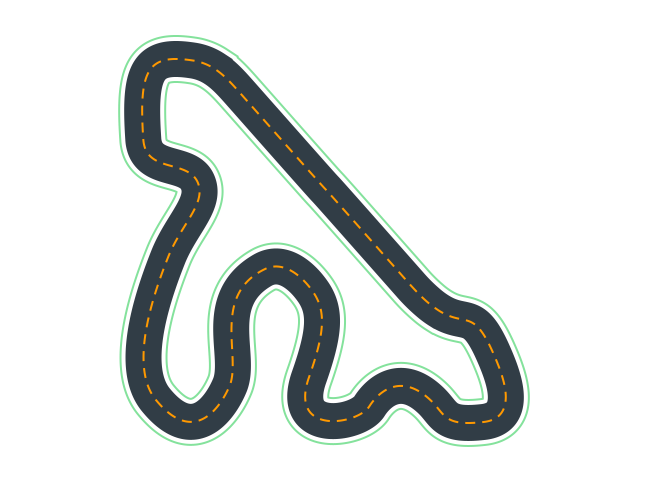 |
2022 re:Invent Championship |
2022-09-30T17:00:00Z |
2022_reinvent_champ.npy |
35.87 meters |
0.01 meters |
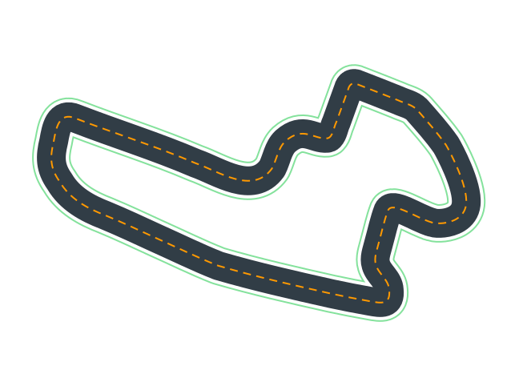 |
Jennens Super Speedway |
2022-09-30T17:00:00Z |
2022_october_pro.npy |
62.08 meters |
0.01 meters |
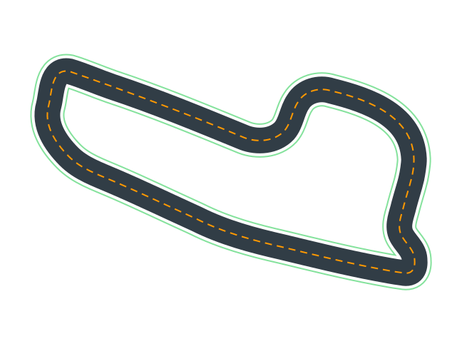 |
Jennens Family Speedway |
2022-09-30T17:00:00Z |
2022_october_open.npy |
49.57 meters |
0.01 meters |
|
Roger Super Raceway |
2022-09-01T00:00:00Z |
2022_september_pro.npy |
60.18 meters |
1.07 meters |
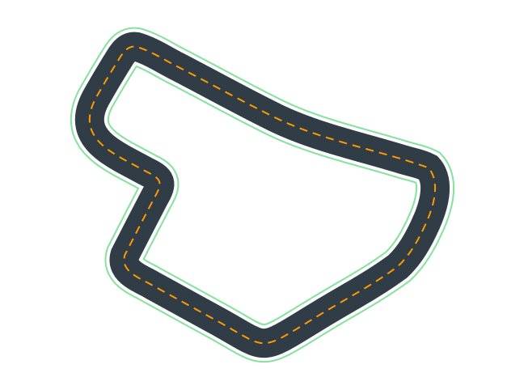 |
Roger Ring |
2022-09-01T00:00:00Z |
2022_september_open.npy |
45.30 meters |
1.07 meters |
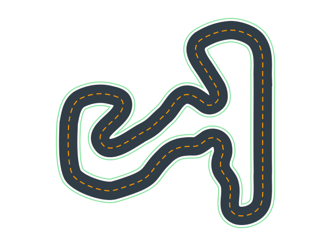 |
Jochem Highway |
2022-08-01T00:00:00Z |
2022_august_pro.npy |
63.88 meters |
1.07 meters |
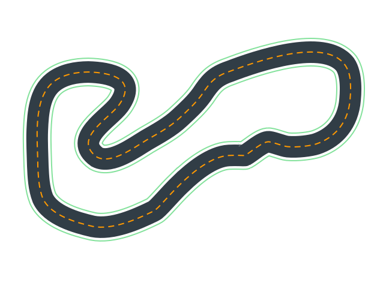 |
Jochem Turnpike |
2022-08-01T00:00:00Z |
2022_august_open.npy |
43.31 meters |
1.07 meters |
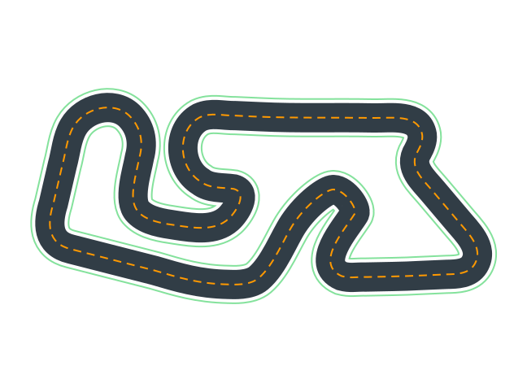 |
DBro Super Raceway |
2022-07-01T00:00:00Z |
2022_july_pro.npy |
57.89 meters |
1.07 meters |
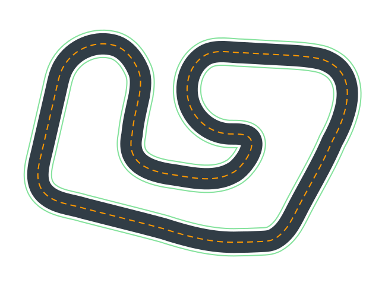 |
DBro Raceway |
2022-07-01T00:00:00Z |
2022_july_open.npy |
40.20 meters |
1.07 meters |
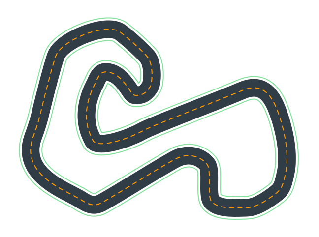 |
BreadCentric Speedway |
2022-06-01T00:00:00Z |
2022_june_pro.npy |
58.61 meters |
1.07 meters |
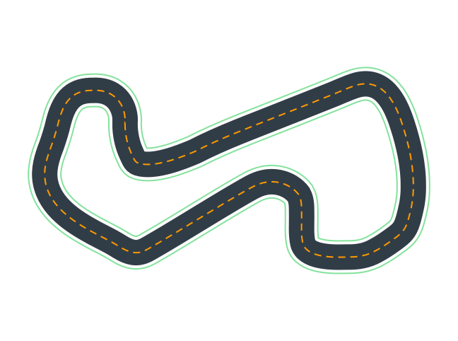 |
BreadCentric Loop |
2022-06-01T00:00:00Z |
2022_june_open.npy |
41.28 meters |
1.07 meters |
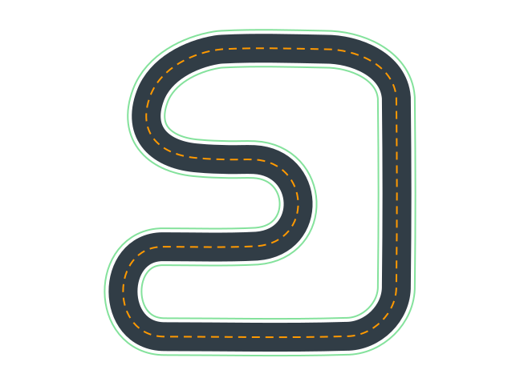 |
Ross Raceway |
2022-05-01T00:00:00Z |
2022_may_open.npy |
46.16 meters |
1.07 meters |
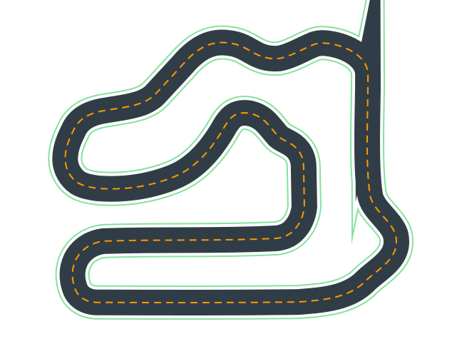 |
Ross Super Speedway |
2022-05-01T00:00:00Z |
2022_may_pro.npy |
63.92 meters |
1.07 meters |
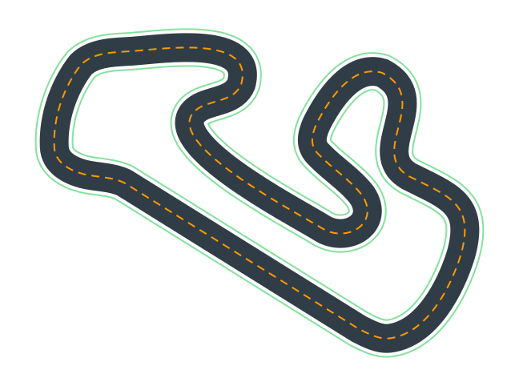 |
Ace Super Speedway |
2022-04-01T00:00:00Z |
2022_april_pro.npy |
67.46 meters |
1.07 meters |
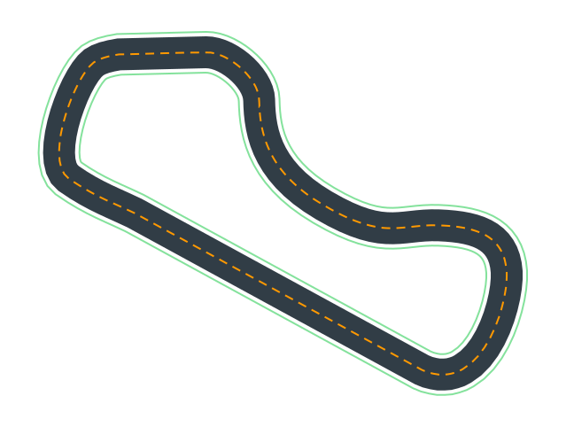 |
Ace Speedway |
2022-04-01T00:00:00Z |
2022_april_open.npy |
50.30 meters |
1.07 meters |
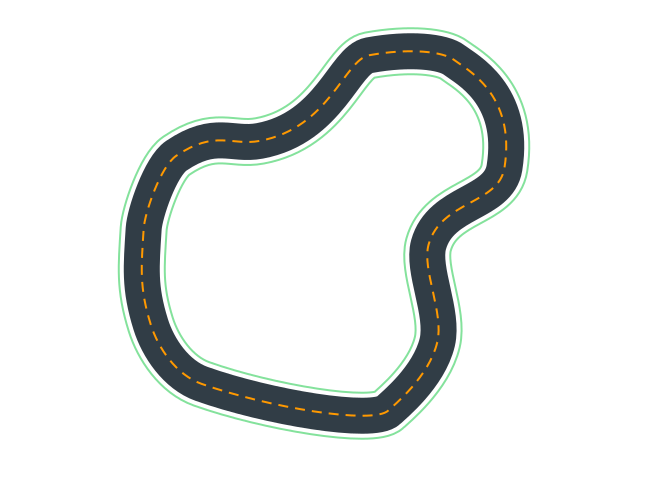 |
Rogue Circuit |
2022-03-01T00:00:00Z |
2022_march_open.npy |
48.07 meters |
1.07 meters |
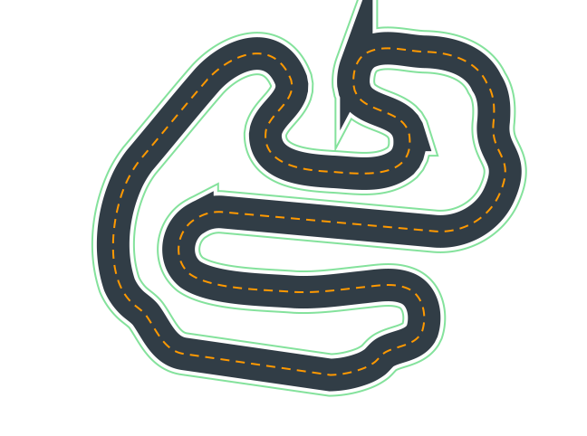 |
Rogue Raceway |
2022-03-01T00:00:00Z |
2022_march_pro.npy |
76.76 meters |
1.07 meters |
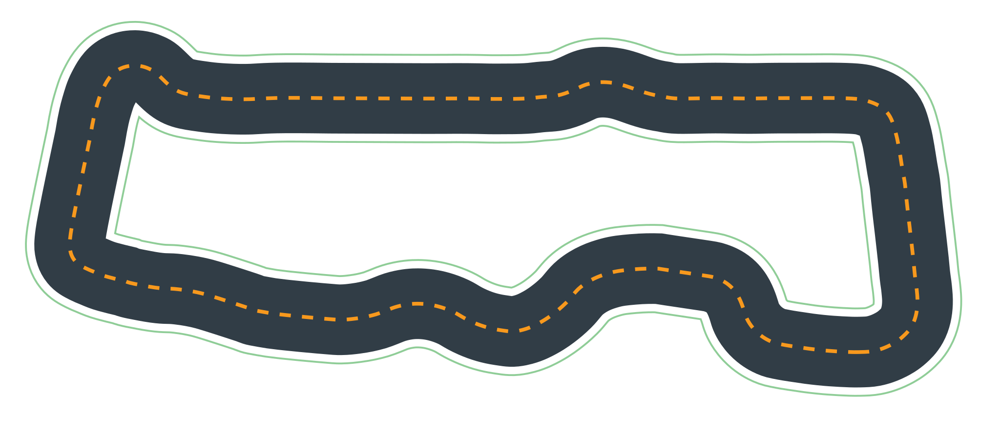 |
Summit Speedway |
2022-02-01T00:00:00Z |
2022_summit_speedway.npy |
25.24 meters |
1.07 meters |
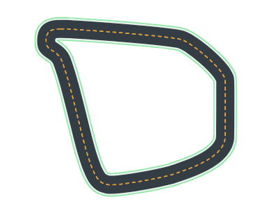 |
Vivalas Loop |
2021-10-30T10:00:00Z |
caecer_loop.npy |
39.12 meters |
1.08 meters |
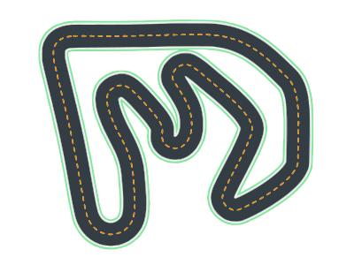 |
Vivalas Speedway |
2021-10-30T00:00:00Z |
caecer_gp.npy |
73.78 meters |
1.08 meters |
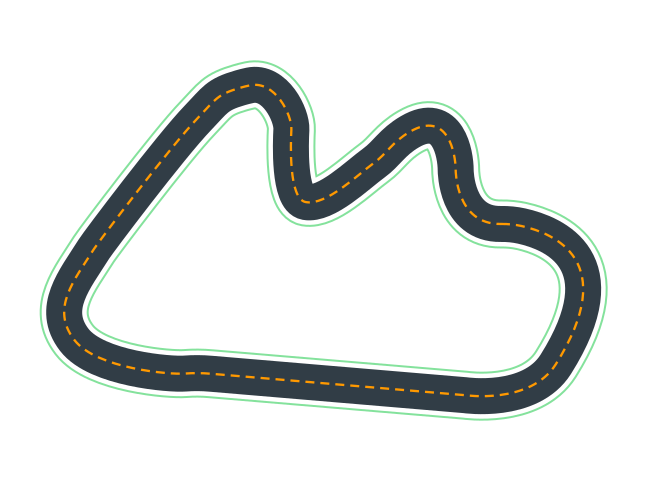 |
Expedition Loop |
2021-09-30T17:00:00Z |
red_star_open.npy |
43.47 meters |
0.01 meters |
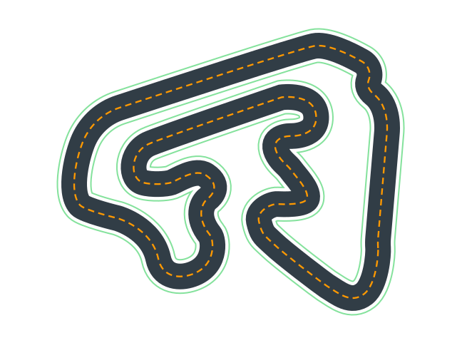 |
Expedition Super Loop |
2021-09-30T16:58:00Z |
red_star_pro.npy |
69.17 meters |
0.01 meters |
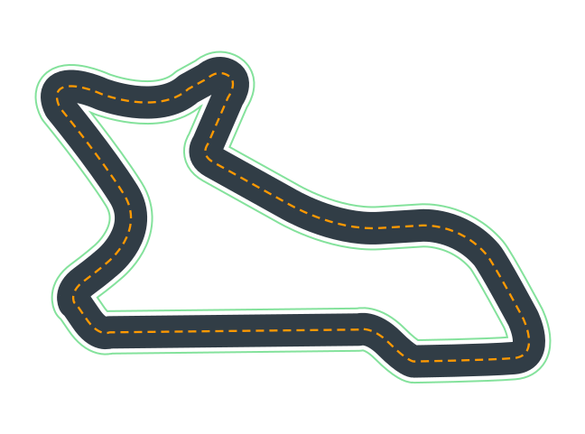 |
Playa Super Raceway |
2021-09-01T00:00:00Z |
morgan_pro.npy |
59.57 meters |
0.01 meters |
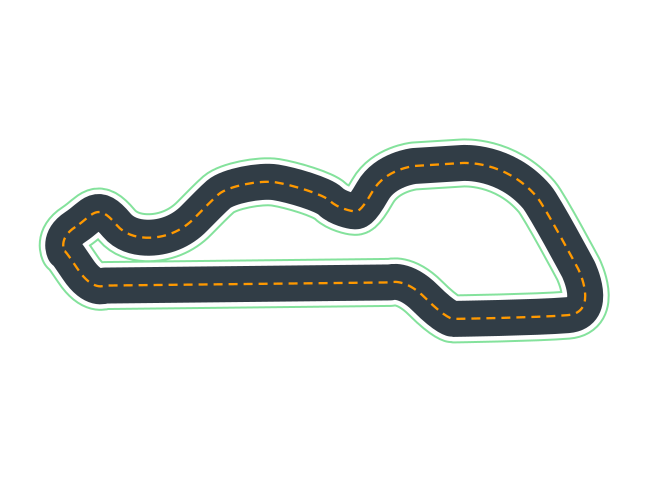 |
Playa Raceway |
2021-09-01T00:00:00Z |
morgan_open.npy |
45.06 meters |
0.01 meters |
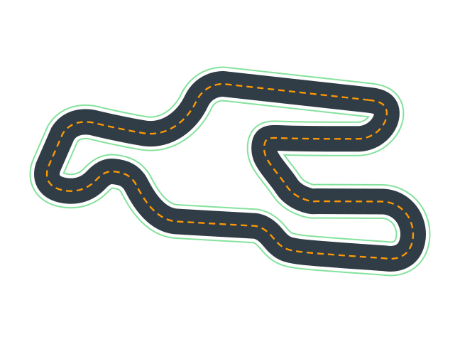 |
Hot Rod Super Speedway |
2021-07-31T00:00:01Z |
arctic_pro.npy |
59.50 meters |
0.01 meters |
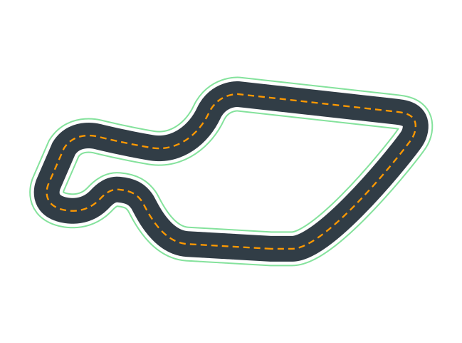 |
Hot Rod Speedway |
2021-07-31T00:00:01Z |
arctic_open.npy |
42.21 meters |
0.01 meters |
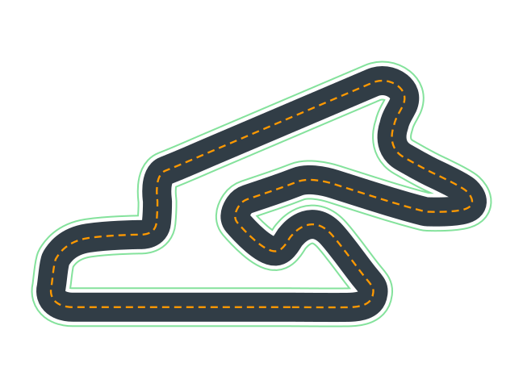 |
Baja Highway |
2021-06-30T16:58:00Z |
dubai_pro.npy |
64.67 meters |
0.01 meters |
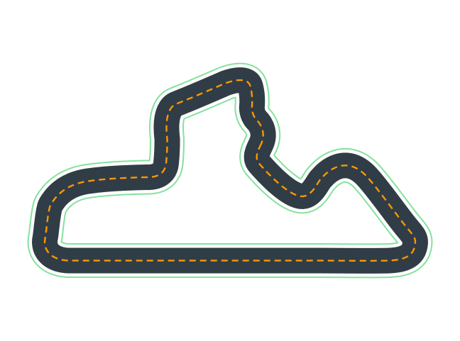 |
Baja Turnpike |
2021-06-30T16:58:00Z |
dubai_open.npy |
40.56 meters |
0.01 meters |
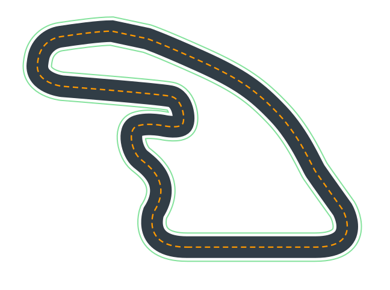 |
Kuei Raceway |
2021-06-10T23:45:00Z |
hamption_open.npy |
45.93 meters |
0.01 meters |
|
Cosmic Circuit |
2021-05-25T21:28:41Z |
jyllandsringen_pro.npy |
62.02 meters |
0.01 meters |
|
Cosmic Loop |
2021-05-25T21:14:49Z |
jyllandsringen_open.npy |
46.12 meters |
0.01 meters |
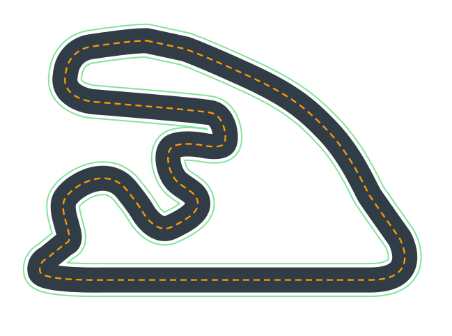 |
Kuei Super Raceway |
2021-05-01T00:00:00Z |
hamption_pro.npy |
60.74 meters |
0.01 meters |
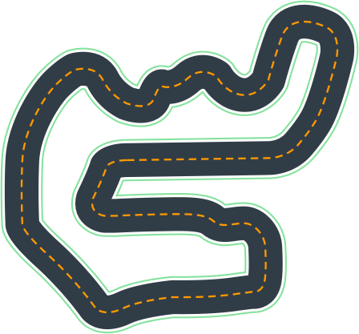 |
Lars Circuit |
2021-04-01T00:00:01Z |
thunder_hill_pro.npy |
59.23 meters |
1.07 meters |
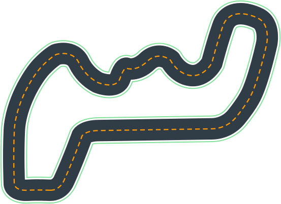 |
Lars Loop |
2021-04-01T00:00:01Z |
thunder_hill_open.npy |
41.55 meters |
1.07 meters |
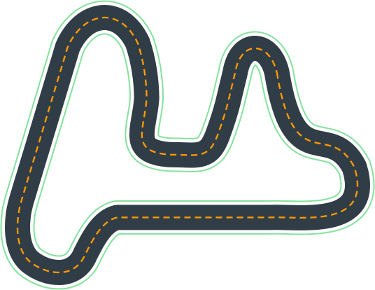 |
Po-Chun Speedway |
2021-03-01T01:00:00Z |
penbay_open.npy |
68.68 meters |
1.07 meters |
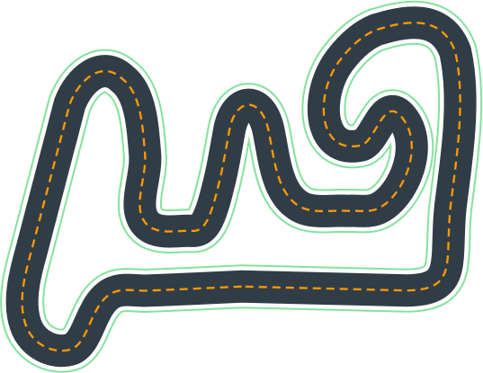 |
Po-Chun Super Speedway |
2021-03-01T01:00:00Z |
penbay_pro.npy |
89.24 meters |
1.07 meters |
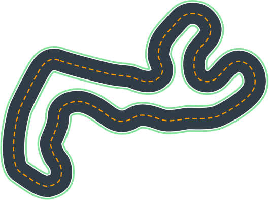 |
European Seaside Circuit - Buildings |
2021-01-04T00:00:00Z |
Monaco_building.npy |
60.00 meters |
1.28 meters |
|
Asia Pacific Bay Loop - Buildings |
2021-01-04T00:00:00Z |
Singapore_building.npy |
60.00 meters |
1.35 meters |
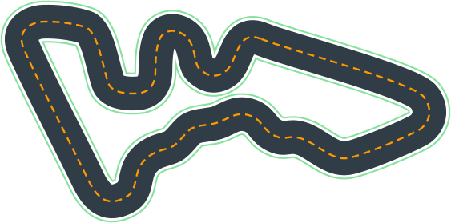 |
American Hills Speedway |
2020-11-10T00:00:00Z |
Austin.npy |
59.00 meters |
1.31 meters |
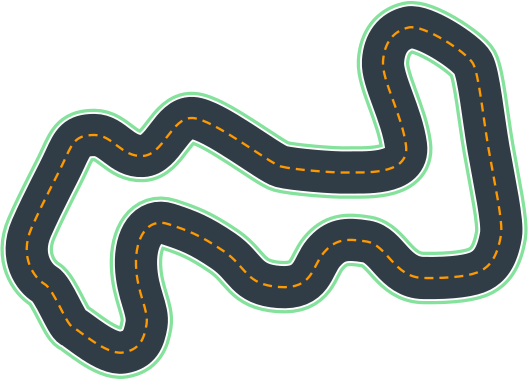 |
Asia Pacific Bay Loop |
2020-11-10T00:00:00Z |
Singapore.npy |
60.00 meters |
1.35 meters |
|
European Seaside Circuit |
2020-11-10T00:00:00Z |
Monaco.npy |
60.00 meters |
1.28 meters |
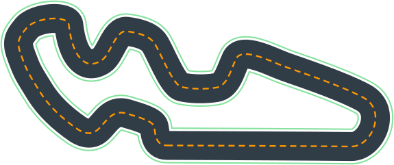 |
Stratus Loop |
2020-10-01T00:00:00Z |
Aragon.npy |
60.00 meters |
1.05 meters |
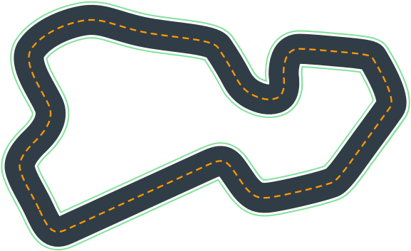 |
Cumulo Turnpike |
2020-09-01T00:00:00Z |
Belille.npy |
60.00 meters |
1.06 meters |
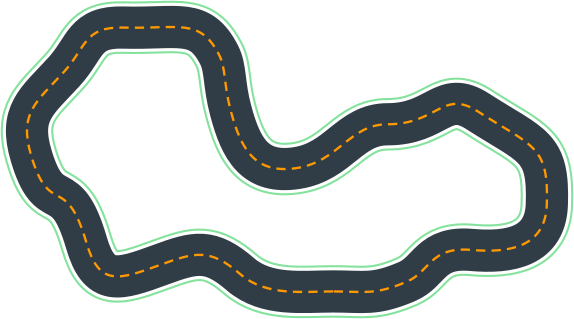 |
Yun Speedway |
2020-08-01T00:00:00Z |
Albert.npy |
51.00 meters |
1.07 meters |
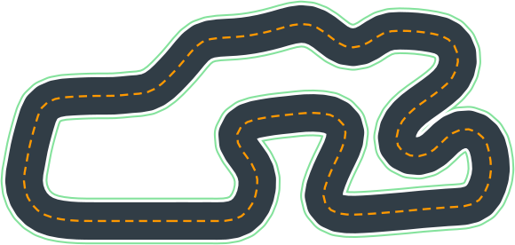 |
Roger Raceway |
2020-07-01T00:00:00Z |
July_2020.npy |
60.00 meters |
1.07 meters |
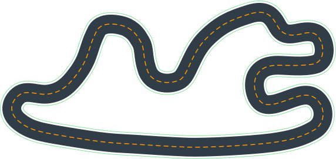 |
Fumiaki Loop |
2020-06-01T00:00:00Z |
FS_June2020.npy |
53.00 meters |
1.07 meters |
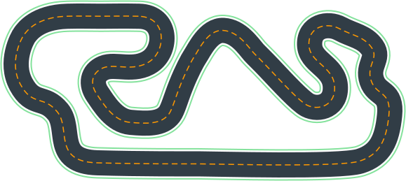 |
Circuit de Barcelona-Catalunya |
2020-05-01T00:00:00Z |
Spain_track.npy |
60.00 meters |
1.07 meters |
|
The 2019 DeepRacer Championship Cup |
2020-04-01T00:00:00Z |
reInvent2019_track.npy |
23.12 meters |
1.07 meters |
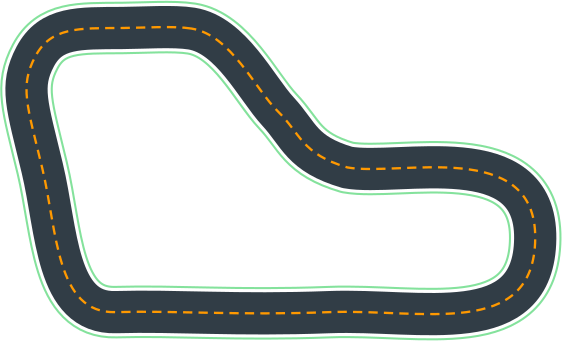 |
re:Invent 2018 |
2020-03-01T00:00:00Z |
reinvent_base.npy |
17.60 meters |
0.76 meters |
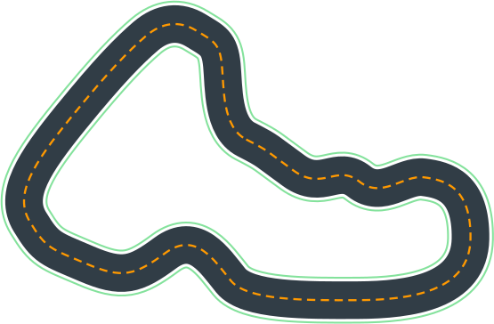 |
Baadal Track |
2020-02-01T00:00:00Z |
AmericasGeneratedInclStart.npy |
39.00 meters |
1.07 meters |
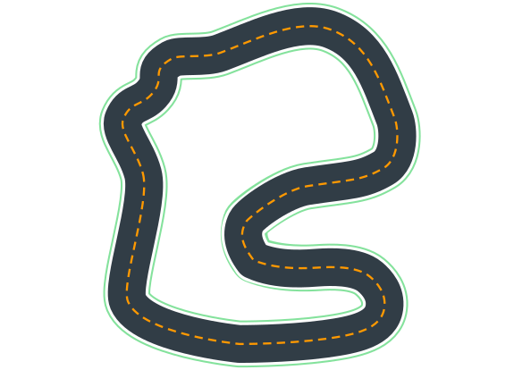 |
SOLA Speedway |
2020-01-01T00:00:00Z |
LGSWide.npy |
38.00 meters |
1.06 meters |
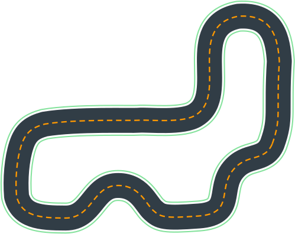 |
AWS Summit Raceway |
2019-12-01T00:00:00Z |
Vegas_track.npy |
22.57 meters |
0.91 meters |
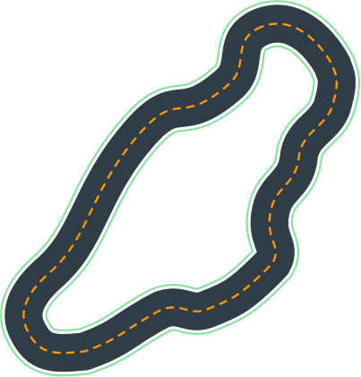 |
Toronto Turnpike Training |
2019-10-01T00:00:00Z |
Canada_Training.npy |
21.74 meters |
0.76 meters |
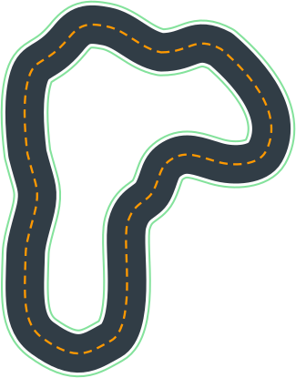 |
Cumulo Carrera Training |
2019-09-01T00:00:00Z |
Mexico_track.npy |
20.51 meters |
0.76 meters |
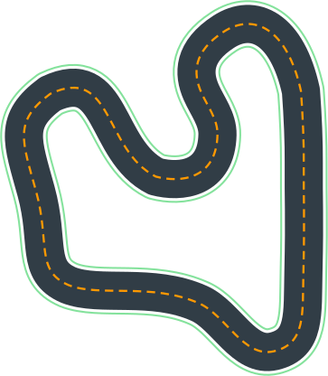 |
Shanghai Sudu Training |
2019-08-01T00:00:00Z |
China_track.npy |
22.92 meters |
0.76 meters |
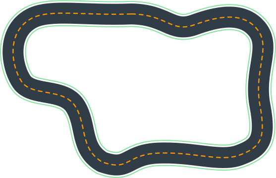 |
Empire City Training |
2019-07-01T00:00:00Z |
New_York_Track.npy |
21.88 meters |
0.76 meters |
Kumo Torakku Training |
2019-06-01T00:00:00Z |
Tokyo_Training_track.npy |
22.63 meters |
0.76 meters |
|
London Loop Training |
2019-05-01T00:00:00Z |
Virtual_May19_Train_track.npy |
19.45 meters |
0.76 meters |
|
Bowtie Track |
2019-04-01T00:00:00Z |
Bowtie_track.npy |
17.43 meters |
0.76 meters |
|
Oval Track |
2019-03-01T00:00:00Z |
Oval_track.npy |
19.55 meters |
0.76 meters |
|
re:Invent 2018 Wide |
2019-02-01T00:00:00Z |
reInvent2019_wide.npy |
16.64 meters |
1.07 meters |